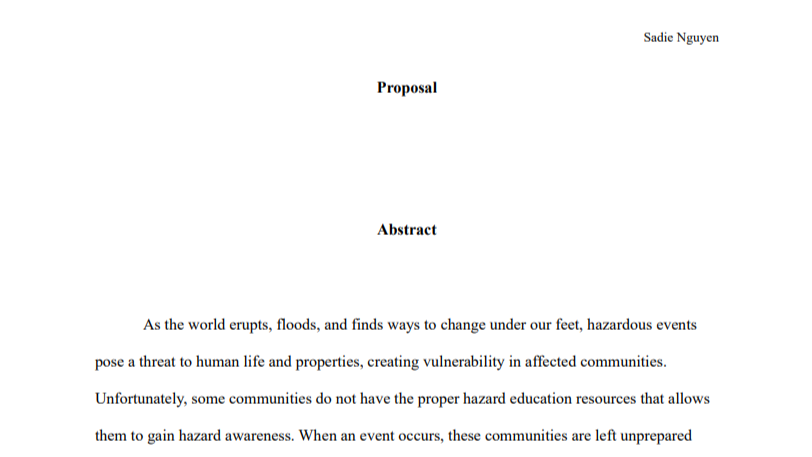
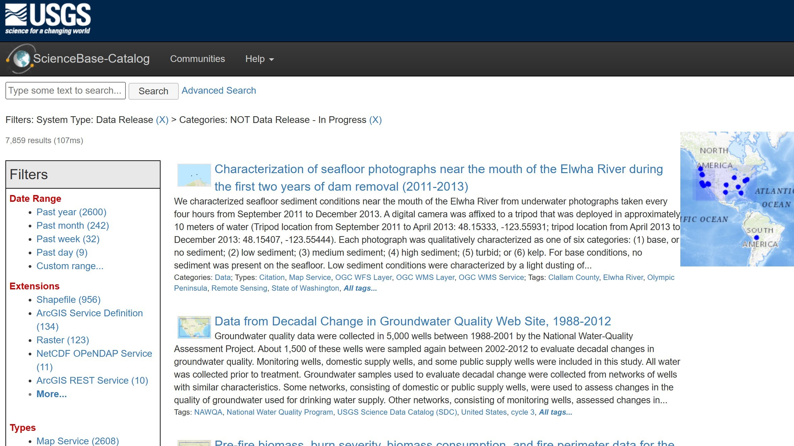
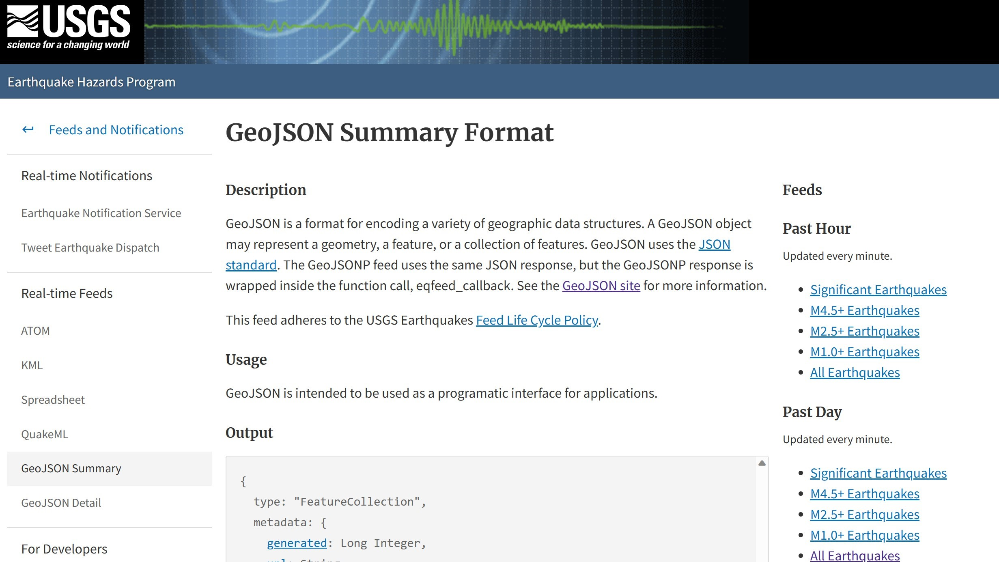

Capstone
Relevant Documents

Capstone Proposal - Winter 2023
Data retrieved from the linked resources listed below

Hawaii Statewide GIS Program

USGS ScienceBase Catalog

USGS Earthquake Hazards Program